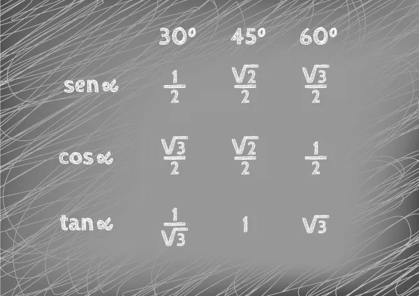
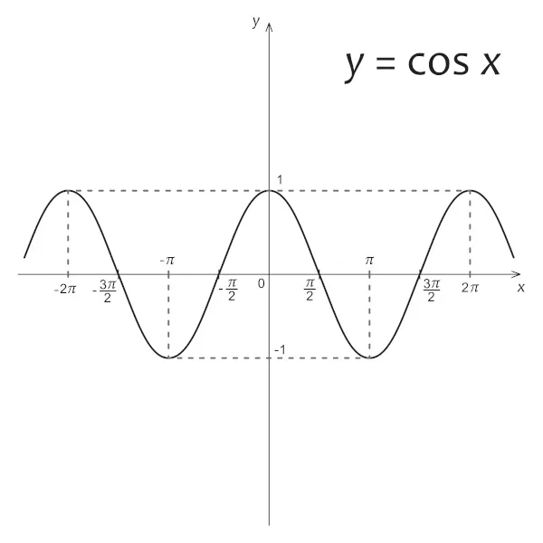

O que é trigonometria?
A trigonometria é uma área da geometria plana euclidiana que analisa a relação existente entre os ângulos de um triângulo e o comprimento dos seus lados. As razões trigonométricas principais são o seno, o cosseno e a tangente. É possível também encontrar o valor dessas razões trigonométricas por meio de representação no ciclo trigonométrico, que permite encontrar o valor de cada uma das razões em função do ângulo, o que torna possível também tratar as razões trigonométricas como funções.
Trigonometria no triângulo retângulo
Analisando a proporção entre os lados de um triângulo desse tipo, é possível definir o que conhecemos como razões trigonométricas. São elas o seno, o cosseno e a tangente.
Conhecemos como hipotenusa o seu maior lado, que está sempre oposto ao ângulo de 90º. Os outros lados são chamados de catetos. Para calcular o seno, o cosseno ou a tangente, é necessário utilizar um ângulo como referência, por isso os catetos são chamados de cateto oposto (o lado que está de frente para o ângulo) e cateto adjacente (o lado que forma o ângulo junto à hipotenusa).

Ângulos notáveis
Além de conhecer as razões trigonométricas, existem os chamados ângulos notáveis. Esses ângulos são os que mais aparecem na resolução de problemas em provas e vestibulares. Eles são os ângulos de 30º, 45º e 60º. Para conhecer o valor do seno e do cosseno de cada um deles, utilizamos a seguinte tabela:
Funções trigonométricas
O trabalho com variáveis é de grande importância na Matemática. Pensando nas principais razões trigonométricas, temos a função seno e a função cosseno. Essas funções são bastante comuns no estudo da mecânica, na construção civil e em estudos aprofundados na Matemática. Auxiliam na análise a variação do ângulo e o seu comportamento.
→ Função seno
Seja x um número real, a função seno possui lei de formação igual a f(x) = sen(x) R → R. O gráfico da função seno é o que conhecemos como senoide ou gráfico senoidal. É importante perceber que ele é o que chamamos de cíclico, pois os valores do seno estão sempre entre 1 e -1 e se repetem de forma cíclica, o que faz o senoide ter esse formato de ondas.

→ Função cosseno
Ela tem um comportamento bastante parecido com o da função seno, gerando um gráfico também cíclico, com imagem entre 1 e -1. Definimos como função cosseno aquela que a lei de formação é f(x) = cos (x).
Usos da trigonometria
A trigonometria tem várias aplicações na Física e Matemática. Existem várias situações da cinética em que se utilizam vetores que formam triângulos, sendo necessária a aplicação da trigonometria.
As funções trigonométricas podem ser aplicadas em situações que se comportam como ondas, mas também possui aplicações na arquitetura, programação, construção civil, astronomia e em situações em que é necessário encontrar alturas inacessíveis. O domínio da trigonometria é essencial para compreender conceitos avançados da Matemática.
Exercícios
Questão 1 – (IFG) Considere o triângulo retângulo ABC abaixo:

Com base no triângulo assinale a alternativa correta:
A) A área do triângulo ABC é 18√3 cm 2 .
B) A medida do cateto AC é 8√3 cm.
C) A medida da hipotenusa é 10 cm.
D) A razão entre a medida do cateto AB e o cateto AC é √3/2
E) O perímetro do triângulo ABC é 6 (1+√3) cm.
Questão 2 – (IFG) Um barco atravessa um rio em um trecho onde a largura é 50 m, seguindo uma direção que forma um ângulo de 30º com a margem de onde parte (veja figura abaixo).

A distância percorrida pelo barco é:
A) 75 m
B) 80 m
C) 60 m
D) 100 m
E) 120 m